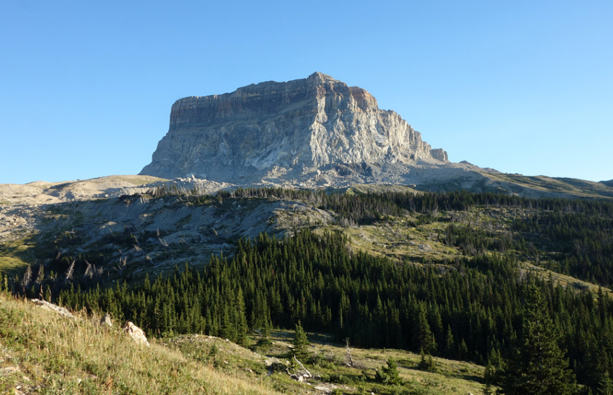
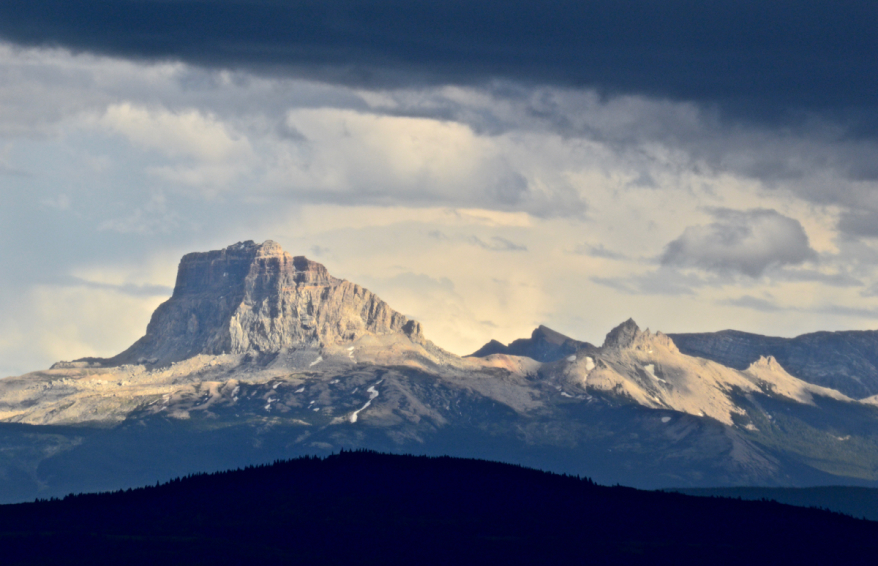
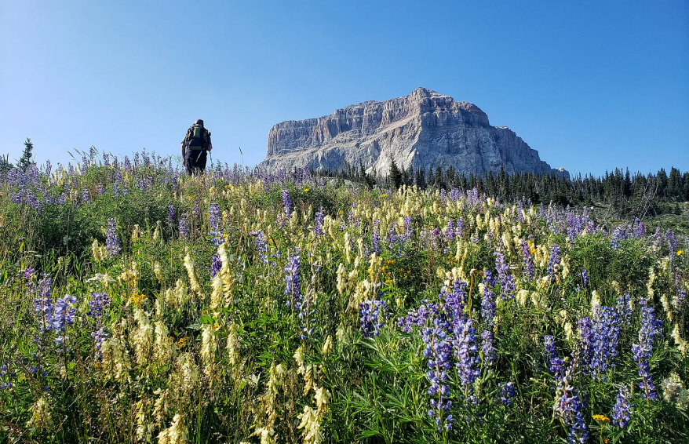
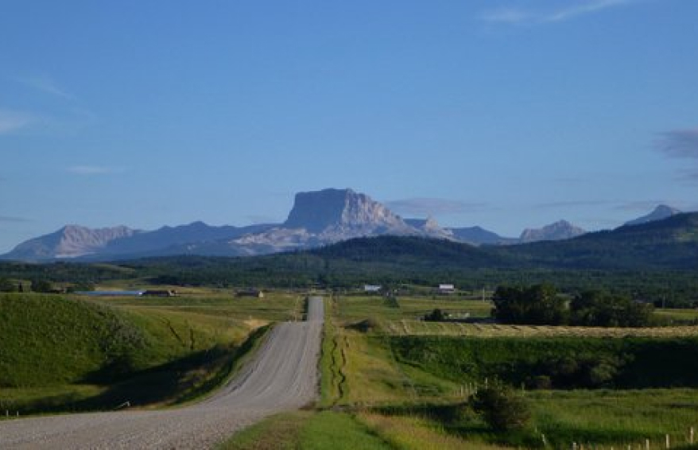

Chief Mountain (Blackfoot: Ninaistako) (9,085 feet (2,769 m)) is located in the U.S. state of Montana on the eastern border of Glacier National Park and the Blackfeet Indian Reservation.The mountain is one of the most prominent peaks and rock formations along the Rocky Mountain Front, a 200 mi (320 km) long overthrust fault, known as the Lewis Overthrust, which extends from central Montana into southern Alberta, Canada.


Cultural significance
“The Mountain that stands apart” is a recognized Blackfoot sacred site known as Chief Mountain. To the Blackfoot people, Ninastako is a sacred mountain, identified as a place of ceremony, medicine gathering, and vision quest site. In the early 1900s, white settlers came to the base area of Chief Mountain, and they observed Native burial sites there that were scattered along the base of the mountain. Ninastako is one of those sacred sites that is used today for fasting ceremonies and picking plants.


The Blackfoot legend of Ninastako
The Blackfoot legend of Ninastako describes the battle between Ksiistsi-koom (thunder) and Omahkai-stow (raven). Ksiistsi-koom stole a man’s wife , and he sought the halp of Omahkai-stow. They battled it out with their powers; ksiistsi-koom used thunder and lightning, while Omahkai-stow used his wings to bring cold wind and snow. In the end, Omahkai-stow won the battle, Ksiistsi-koom returned the wife to the man, and a treaty was made between Omahkai-stow and Ksiistai-koom. Omahkai-stow insisted on dividing the year into two parts; winter and summer. Ksiistsi-koom also gave the Thunder pipe to the man, which to this day is still revered and opens during the spring when thunder is heard. Ksiistsi-koon lives at Ninsatako.